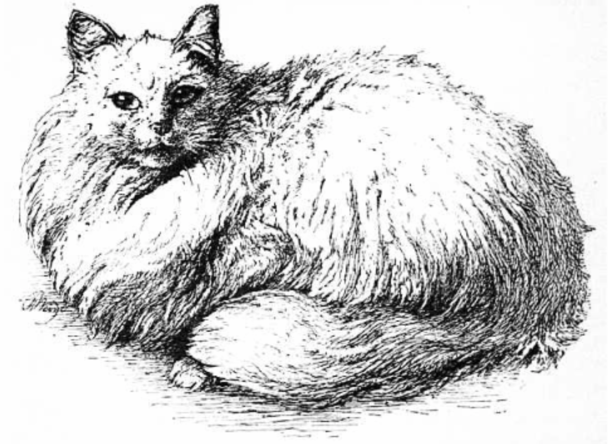

- Introductory
- The First Cat show
- Habits
- Trained Cats
- Usefulness of cats
Usefulness of cats
In our urban and suburban houses what should we do wrNout cats, In our stting or bedrooms, our libraries, in our krtchens and storerooms, our farms, bams, and nckyards, in our docks, our granaries, our ships, and our wharves, in our corn markets, meat markers, and other places too numerous to mentron, how useful they are! In our ships, however, the rats oft . them at defiance still they are of great service.
How wonderfully patent is the cat when watching for rats or mice, awaiting their egress from their place of refuge or Nat which is their home! How well Shakespeare in Pericles, Act III., descnbes this keen attention of the cat to its natural pursuit!
The cat, in eyrie of burning coal, Now crouches horn (before) the mouse, hole.
A slight rustle, and the fugitive, comes for, a quick, sharp, resolute motion, and the cat has proved Its usefulness. Let any one have a plague of rats and mice, as I once had, and let them be delivered therefrom by rats, as I was, and they will have a lasting and kind regard for them.